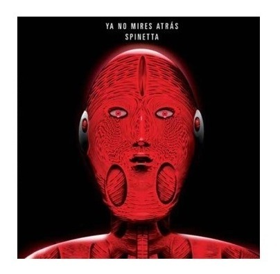
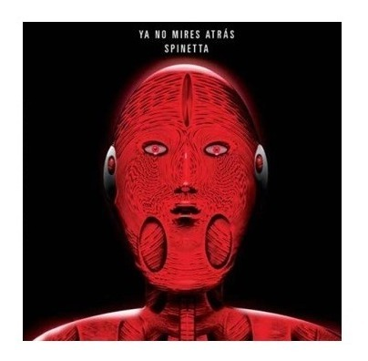

Luis Alberto Spinetta
Luis Alberto Spinetta (Buenos Aires; 23 de enero de 1950 - Ib.; 8 de febrero de 2012) fue un multifacético artista argentino, cantante, intelectual, guitarrista, poeta, escritor, dibujante, productor discográfico, compositor, considerado uno de los más importantes y respetados músicos en Latinoamérica.
A lo largo de su carrera ha ganado varios premios, entre los que se destacan los siguientes:
- Premio Konex de Honor 2015: Música Popular
- Premio Konex de Platino 2005: Solista Masculino de Rock
- Premio Konex de Platino 1995: Cantante Masculino de Rock
-
Premio Konex de Platino 1985: Autor / Compositor de Rock
Albumes:
Go Top
 
